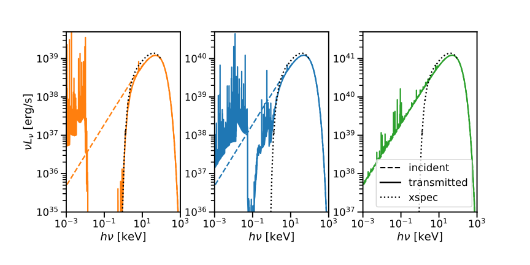
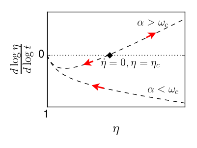

Research
What I’m thinking about now - CSM interaction
I’m currently thinking about various aspects of supernovae interacting with thick circumstellar media. A SN exploding into a dense wind will form a forward shock propagating into the wind, and a reverse shock propagating into the ejecta. Initially, the photon diffusion time through the wind may be longer than the dynamical time, keeping the photons trapped in a radiation-mediated shock, until the two times become comparable, and the photons can escape. This stage is known as a shock breakout. I’m interested in what happens after, once the shocks become collisionless.
My main question is what we will observe, and what does that tell us about the CSM? What I like about this problem is that it has a lot of different physics. Both shocks heat the matter to x-ray temperatures, but these x-rays can be reprocessed by photoabsorption in various parts of the system. The reprocessed X-rays will contribute to cooling via inverse Compton, while the cooling will affect the temperature and density in the interaction region, and can significantly change the reprocessing. In addition, the photons diffusing through the upstream can be photoabsorbed or can photoionize their way out. Perhaps, they will suffer Compton degradation, or maybe they’ll heat parts of the upstream, and will not? Additional complications arise when one considers non-thermal pressure sources such as magnetic fields and cosmic rays, the electron-ion coupling in the shocks, and the effect a clumpy wind may have on the cooling efficiency.
I’m working on several components of this vast problem, mainly analytically. One of these is the problem of x-ray absorption and reprocessing, and another is treating the case in which the wind is Thompson thin. I am also very glad to have the magnificent observations of SN2023ixf to test my models against.
The figure below compares CLOUDY with XSPEC tbabs, and demonstrates the limitation of using a neutral column density to fit a partially ionized absorber.

The Structure and Evolution of Relativistic Jetted Blast Waves
Focusing on GRB jets observed off-axis
Measuring the geometry of GRB jets, and specifically, the jet core angle, has been a long-standing problem, due to its role in constraining the jet energy and GRB event rate, which, in turn, are important for the launching mechanism and the role of GRB progenitors in shaping their surroundings. The thousands of on-axis jets observed to date have demonstrated how difficult it is to measure the geometry with on-axis observations. The emission of off-axis jets in the afterglow phase is shaped primarily by their geometry, since relativistic beaming limits the region of the jet observed at every time. This is slightly complicated by the fact that the jet’s structure evolves in time.
To solve this, I simulated a variety of jet structures with the publicly available code Gamma, a very cool relativistic hydro code, that resolves highly relativistic flows by using Lagrangian formalism in the radial direction and an Eulerian grid in the angular direction. Using these simulations, as well as analytical arguments, I found that a broad range of initial structures approach seemingly self-similar solutions (though proving this would require solving the equations analytically). These self-similar solutions retain memory of the initial jet opening angle, surprisingly even until the jet becomes Newtonian (yup, that means it doesn’t immediately approach the Sedov-Taylor evolution).
Using these simulations and a simple analytical model, we were able to show that the jet core angle and observer angle can be measured using a combination of the light curve, which gives the ratio between the core angle and observer angle, and the image centroid motion, as observed with VLBI, which gives the difference between the two angles. These measurements are not affected by the jet’s angular structure. In addition, the understanding of the jet’s fluid dynamical evolution enables us to constrain the jet core angle at the time of breakout from the ejecta, and use the light-curve to measure the jet’s initial angular structure.
Applying these to the GRB afterglow of GW170817, we find that the jet core angle at the time of the peak of the light curve is $1.5-4$ degrees, which means the initial core angle was $0.5-4$ degrees. The observing angle is $20$ degrees, and the inital jet structure was $\frac{d\log E_{iso}}{d\log\theta}\simeq 3-4$. These measurements make it the most well-observed jet.
The video below is based on one of my simulations. The large panel shows the light curve, while the small panel shows the jet structure at the lab time, contributing most to the current observer time. The regions responsible for 90% and 50% of the observed flux are marked on the jet structure. This demonstrates that an observer sweeps through the jet structure and is thus sensitive to its geometry.
### A few words about measuring H0 with gravitational wave events with an observable jet Gravitational waves provide a direct measurement of the luminosity distance, making them a valuable tool to measure the local Hubble constant without relying on the distance ladder measurement. However, for events with small inclinations, the inclination angle of the binary is degenerate with the luminosity distance. In binary neutron star mergers or mergers and perhaps also in mergers of a neutron star and a black hole, observations of the GRB jet can provide a complementary measurement of the geometry, assuming the jet is launched in the direction of the angular momentum. 5-10 such events would be sufficient for resolving the Hubble tension, but given the current neutron star merger rate, I hope the Hubble tension will be resolved before that. ___
Shocks in Expanding Media

What happens when you drive a shock into already expanding media? Will the shock eventually die out, or propagate out to infinity? This question is perhaps relevant if, following a stellar explosion, such as a supernova or neutron star merger, a central engine drives another shock into the previously launched ejecta. But even if it isn’t, it still makes for an interesting problem in hydrodynamics. It turns out that having two velocity scales, the shock velocity and the local upstream velocity, generally means that the solution will not be self-similar, making it very difficult to solve analytically. The exception is the special case in which the velocity ratio remains constant. Such a solution only exists for steep enough density profiles and is repulsive. Shocks starting infinitely close to it will move away from this solution. It separates between solutions in which the velocity ratio grows and those in which it decreases.
Right before submitting the paper on the Newtonian version of this problem, I had an anzats for the (non-self-similar) shock evolution. It fits the numerical simulation data perfectly, and is presented in the paper. Why shocks evolve in this manner, and whether the flow can be fully solved for these cases, remains a mystery. Let me know if you have an idea!
The explanation above is for the Newtonian problem, but this line of argument is easily generalized also for relativistic shocks in expanding media in this paper, with the added benefit that while the spherical geometry is assumed in the solution, it should be a good approximation also for jets, since regardless of the geometry, an ultra-relativistic shock is only causally connected over a limited angular scale.